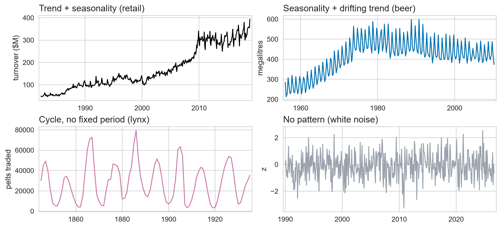
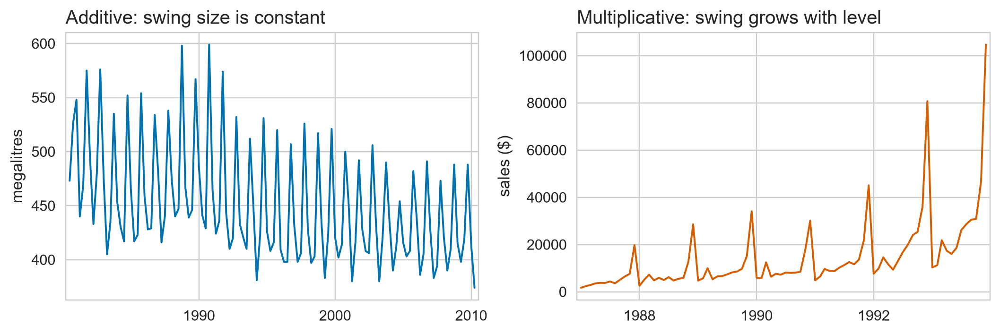
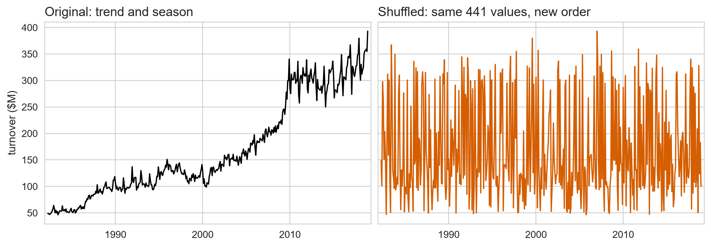
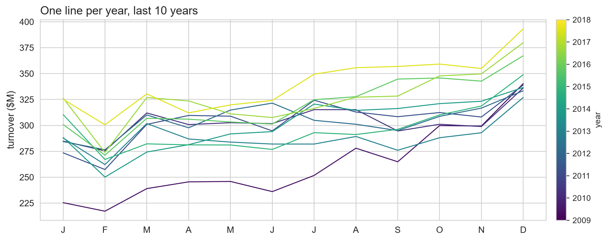

Getting Started & Time Series Patterns
Day 1 · Segments 1–2 · fpppy Ch 1–2
2026-08-25
Where we are going
- Day 1: Patterns, decomposition, and features
- Day 2: Baselines, uncertainty, and evaluation
- Day 3: Forecasting models
The Goal
Diagnose a series, build a baseline, and prove whether anything beats it.
A. What forecasting is for
Ch 1 · Why forecast at all
Forecasts exist to change decisions
- Inventory: how much stock to hold
- Staffing: how many people to roster
- Energy: when generation must ramp up
- Finance: cash flow and budget targets
A forecast is only useful if it changes a decision.
Three factors dictate predictability
- Understanding: how well we understand the drivers
- Data: how much historical data exists
- Influence: whether the forecast changes the outcome
High data and clear drivers make series predictable
Electricity Demand
- Clear physical drivers (weather, calendar)
- High volume of historical data
- Forecast does not change demand
- \(\rightarrow\) Highly predictable
Exchange Rates
- Weakly understood drivers
- Forecast moves the market
- No stable recurring pattern
- \(\rightarrow\) Hard to beat today’s price
Pure time series models require no future drivers
Forecasting hourly electricity demand (ED) — three ways to write the same job:
1. Explanatory — why is demand what it is? Every driver on the right needs its own forecast first.
\[\small \text{ED} = f(\text{temperature},\ \text{economy},\ \text{population},\ \text{time of day},\ \text{day of week},\ \text{error})\]
2. Time series — what happened next last time? Everything on the right is already recorded.
\[\small \text{ED}_{t+1} = f(\text{ED}_t,\ \text{ED}_{t-1},\ \text{ED}_{t-2},\ \text{ED}_{t-3},\ \ldots,\ \text{error})\]
3. Mixed — dynamic regression: past demand plus drivers, so the drivers’ forecast error rides along.
\[\small \text{ED}_{t+1} = f(\text{ED}_t,\ \text{temperature}_{t+1},\ \text{time of day},\ \text{day of week},\ \text{error})\]
Course focus: Days 1–2 stay on model 2. Day 3 goes further.
Past history avoids missing future predictors
Time series models only need to know: what happened next last time?
- External drivers may not be available
- Future driver values are often unknown (e.g. future gas prices)
- The real system is often too complex to specify
B. What is in a time series
Ch 2 · Patterns and components
Trend, seasonality, and cycles are distinct patterns
- Trend: Long-term increase or decrease
- Seasonality: Repeating pattern at a fixed, known period (day, week, year)
- Cycle: Rises and falls with no fixed period (business cycles)
Seasonality has a fixed calendar period; cycles vary
Seasonality
- Known, fixed period
- Driven by the calendar / clock
- Can be counted on reliably
Cycle
- Variable, unknown period
- Driven by economic / natural factors
- Turning points are hard to predict
Common Mistake
Treating a cycle as seasonality causes models to predict peaks at the wrong time with false confidence.
Four series show four distinct temporal patterns
# Datasets:
# 1. Victorian retail takeaway turnover: spine = D.spine()
# 2. Australian quarterly beer production: beer = D.beer()
# 3. Canadian lynx pelts (annual): lynx = D.lynx()
# 4. Simulated white noise: noise = D.white_noise(n=len(spine), seed=7)
fig, axes = plt.subplots(2, 2, figsize=(10, 5.4))
P.plot_series(spine, ax=axes[0, 0], title="Trend + seasonality (retail)", ylabel="turnover ($M)")
P.plot_series(beer, ax=axes[0, 1], title="Seasonality + drifting trend (beer)", color=P.BLUE, ylabel="megalitres")
P.plot_series(lynx, ax=axes[1, 0], title="Cycle, no fixed period (lynx)", color=P.PINK, ylabel="pelts traded")
P.plot_series(noise, ax=axes[1, 1], title="No pattern (white noise)", color=P.GREY, ylabel="z")Time series split into trend, season, and remainder
- Additive: \(y_t = S_t + T_t + R_t\)
- Multiplicative: \(y_t = S_t \times T_t \times R_t\)
| Component | Meaning |
|---|---|
| \(S_t\) | Seasonal component (repeating calendar pattern) |
| \(T_t\) | Trend-Cycle component (underlying direction) |
| \(R_t\) | Remainder (random noise / unexplained variation) |
Decomposition cannot separate trend from cycle, so \(T_t\) carries both. That is why it is written trend-cycle.
Expanding swings require multiplicative models

# Datasets:
# 1. Australian beer production (last 10 years / 120 obs): beer.tail(120)
# 2. Souvenir shop sales: souvenirs = D.souvenirs()
fig, axes = plt.subplots(1, 2, figsize=(9.5, 3.1))
P.plot_series(beer.tail(120), ax=axes[0], color=P.BLUE, ylabel="megalitres",
title="Additive: swing size is constant")
P.plot_series(souvenirs, ax=axes[1], color=P.ORANGE, ylabel="sales ($)",
title="Multiplicative: swing grows with level")- Constant swing \(\rightarrow\) Additive
- Growing swing \(\rightarrow\) Multiplicative (fix with log transform)
The Golden Rule
The order is the data.
- Never shuffle time series data
- Never use random train/test splits
- Never use standard k-fold cross-validation
Same values, shuffled: every pattern is gone

# Dataset: spine = D.spine() (441 monthly observations)
rng = np.random.default_rng(0)
y = spine["y"].to_numpy()
shuffled = rng.permutation(y)
fig, axes = plt.subplots(1, 2, figsize=(10, 3.4), sharey=True)
P.plot_series(spine, ax=axes[0], color=P.BLACK, ylabel="turnover ($M)",
title="Original: trend and season")
P.plot_series(spine.assign(y=shuffled), ax=axes[1], color=P.ORANGE,
title="Shuffled: same 441 values, new order")- Same mean, same variance, same histogram
- Nothing left to forecast from: the order was the only structure
\(\rightarrow\) Exercise 1.1 · Name the pattern
Open labs/01_day1_structure_and_diagnostics.ipynb
- Classify six time series
- Identify: Trend? Seasonality? Cycle?
- Choose: Additive or Multiplicative?
10 minutes. Focus on visual diagnosis.
C. Seeing the patterns
Ch 2.2–2.5 · The four plots
Four plots, four questions
| Plot | Core Question |
|---|---|
| Time plot | What does the overall series look like? |
| Seasonal plot | What is the repeating annual shape? |
| Subseries plot | How does each specific month/quarter evolve? |
| Lag plot | Is \(y_t\) related to \(y_{t-k}\)? (segment 3) |
Start with the Time Plot
Always check the time plot first for outliers, gaps, and structural breaks.
Time plots reveal long-term trend and variance growth
- Upward trend, roughly sixfold over 37 years
- The seasonal swing widens as the level rises
- Sharp 2009 step and 2000 dip: investigate breaks before modelling
Seasonal plots expose repeating annual shapes

# Dataset: Victorian retail takeaway turnover (last 10 years):
# spine = D.spine(); sp = D.add_calendar(spine)
recent = sp[sp["year"] >= sp["year"].max() - 9]
fig, ax = plt.subplots(figsize=(9.5, 3.7))
P.seasonal_plot(recent, "year", "month", ax=ax, season_labels=P.MONTH_LABELS,
ylabel="turnover ($M)", xlabel="", colorbar=True,
title="One line per year, last 10 years")- Every year peaks in December and troughs in February
- The shape repeats while the level climbs: that is seasonality, not cycle
Subseries plots isolate pure seasonal means

Differences in the horizontal means highlight the pure seasonal pattern.
Strong trend obscures raw month-to-month means

Trend Obscures Month-to-Month Means
When trend growth is this large (6x), seasonal differences appear tiny until trend is removed with decomposition (segment 4).
Verify timestamp continuity before fitting models
Inferred frequency : MS
Duplicate stamps : 0
Gaps > 1 month : 0Silent Gaps Break Models
A missing row shifts every seasonal lag that follows. Always check frequency before modelling.
\(\rightarrow\) Exercise 1.2 · Load, verify, and look
Open labs/01_day1_structure_and_diagnostics.ipynb
- Load the spine dataset
- Verify timestamp continuity
- Generate Time, Seasonal, and Subseries plots
15 minutes.
Part 1 Recap
- Forecasts exist to change decisions
- Trend, Seasonality, Cycle are distinct patterns
- Multiplicative swings become additive under a log transform
- Order is the data: never shuffle
Next: Autocorrelation (ACF) and Decomposition.